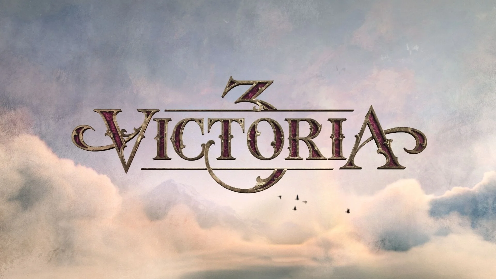

Это масштабная стратегическая игра, которая охватывает период с 1836 по 1936 год. Игроки управляют страной, развивая её экономику, политику, технологии и общество. Игра фокусируется на детализированной симуляции экономики, социальных классов, политических идеологий и международных отношений. Историческая достоверность игры высока: она включает реальные исторические события, технологии, политические движения и культурные изменения. Однако, как и в других играх Paradox, игроки могут отклоняться от реального хода истории, создавая альтернативные сценарии (например, превращая Россию в демократию или восстанавливая империю инков).

Год выпуска: 2022
Разработчик: Paradox Interactive
Достоверность: 9/10
Купить в Steam
Купить на Plati.Market
Разработчик: Paradox Interactive
Достоверность: 9/10
Купить в Steam
Купить на Plati.Market
Минимальные требования:
ОС: Windows 10 Home 64 Bit
процессор: Intel Core i3-3250 или AMD FX 8370
оперативная память: 8 ГБ
видеокарта: Nvidia GeForce GTX 660 или AMD R7 370 (2 ГБ)
место на диске: 10 ГБ
ОС: Windows 10 Home 64 Bit
процессор: Intel Core i3-3250 или AMD FX 8370
оперативная память: 8 ГБ
видеокарта: Nvidia GeForce GTX 660 или AMD R7 370 (2 ГБ)
место на диске: 10 ГБ